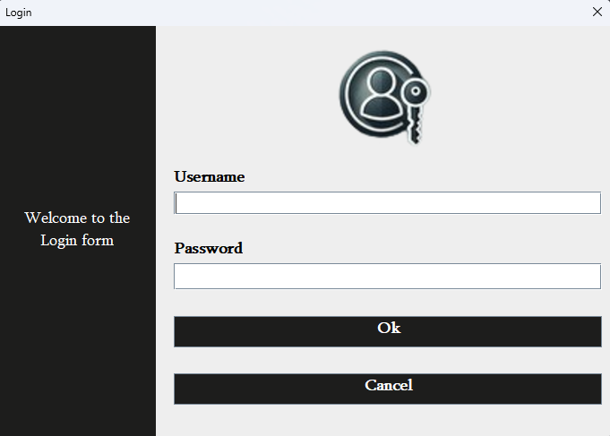
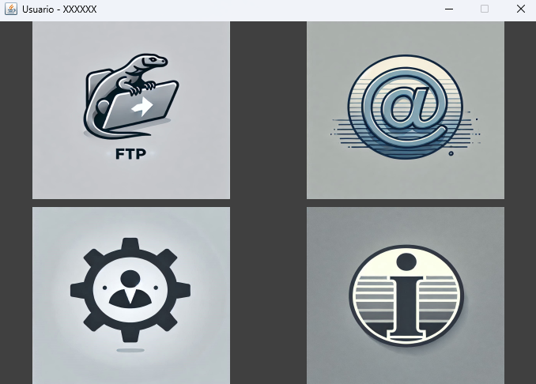
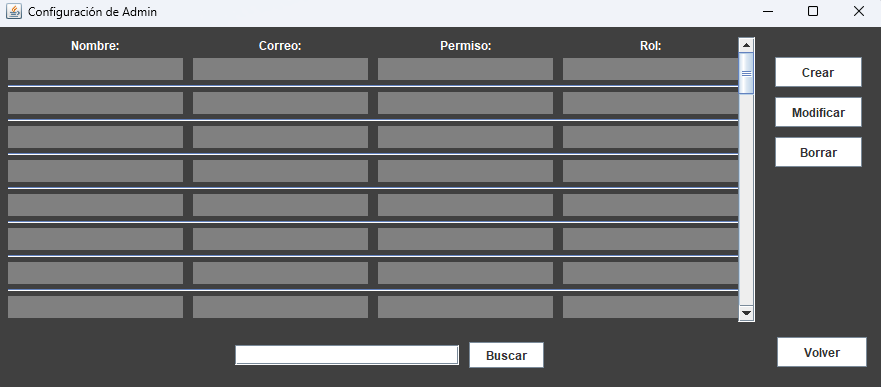

Login

The login screen allows access to the application. Below is an explanation of its basic functionality
- Username: Enter your username in the designated field.
- Password: Enter your password in the corresponding field.
- "Ok" Button: Click this button to confirm the data and proceed.
- "Cancel" Button: If you do not wish to continue, click this button to close the application.
Selection Menu

In this window, the user can choose what action to perform with the program. The available options are as follows:
- FTP System
- Allows access to the FTP system to manage files (upload, download, or administer content).
- Email System
- Provides access to the email system where you can send and receive messages.
- Setting
- Grants access to configuration options to adjust the program preferences.
- Company Information
- Displays information related to the company or details about the program.
FTP Window
Represents a graphical user interface (GUI) designed for an FTP (File Transfer Protocol) based file management system. This system makes it easy for users to manage files and directories on a remote server through the options and functionalities displayed on the screen.
Interface Description
- "Reload" button: Allows the user to update the list of files and directories displayed in the system file tree. This ensures that any changes made, such as the creation, deletion or modification of files, are reflected in real time.
- Text box and "Rename" button Facilitates renaming of a selected file or directory. The user can enter a new name in the text box and, by clicking on "Rename", the system will execute the action.
-
File Tree (JTree):
The file tree shows the hierarchical structure of directories and files available on the FTP server. In the example image, three main folders are shown:
- colors
- sports
- food
-
Main Function Buttons:
On the left side of the interface, there are a number of buttons that facilitate different file and directory management actions:
- Create Directory: Allows you to create a new directory within the FTP server.
- Delete Directory: Facilitates the deletionof a selected directory. It is important to make sure that the directory does not contain files before deleting it, depending on the server rules.
- Modify Directory: Allows you to modify attributes or settings of an existing directory, such as access permissions.
- Delete File: Provides the functionality to delete a selected file from the server.
- Download File: Allows a file to be downloaded from the FTP server to the user's local system.
- "Exit" Button: Logs out and closes the application.
General System Functionality
This FTP management system provides a user-friendly interface that makes it easy for the user to interact with remote files and directories without the need to use FTP commands in a terminal. Key features include:
- Visual navigation: Allows you to explore the structure of the FTP server in an intuitive way.
- Directory management: Create, delete and modify directories.
- File management: Download, delete and rename files.
- Fast synchronisation: The "Reload" option updates the list of files and directories in real time.
Usability
The graphical interface simplifies the use of the FTP protocol, especially for users who are not familiar with command-line based tools. In addition, it provides clearly labelled buttons that allow common actions to be performed quickly and efficiently.
In short, this system automates and streamlines file and directory management tasks on an FTP server, providing a convenient and visual solution for remote data management.
Email Window
The Email Window consists of two sections:
The first window contains the user's email management, where the following functions can be used
- Create New: Create new email
- Inbox: Access the email inbos
- Unread: Access the list of unread emails
- Sent: Access the list of asent emails
- Draft: Access the list of drafts
- Spam: Access the list of spam emails
- Trash: Access the list of deleted email
The second is the sending window, where files can be attached to the email
- To: Recipient of the
- Topic: Subject of the email
- Message: Contetc of the email
- Add File: Button to atach a file to the email
- Send: Button to send the email
- Cancel: Button to cancel the email and return to the previous view
Settings Window
Personal User Settings Window:

Objective: Allows a user to configure and modify their personal information within the system. Available Fields:
- Nickname: The user can set or modify their nickname or alias within the system.
- Name:Field where the user enters their real name.
- Last Name:Allows the user to enter or update their last name.
- Email:Field for the user's personal or work email address
- Password:Facilitates the creation or change of the access password.
- DNI: Section for the National Identity Document or a unique identification number.
- Rol Description: Field where the user's role or responsibilities within the organization can be specified.
- Available Buttons:
- Eliminate:Allows the user to be deleted or certain data to be removed from the system.
- Modify:Option to edit the existing information fields.
- Exit: Closes the window or returns to the main interface.
Admin Settings Window for User Management
- Table Structure:
- Name:Displays the name of each user registered in the database
- Email:The user's email address for contact or account recovery.
- Role:Field that describes the user's specific function within the company (e.g., worker, supervisor, manager).
- Main Functions:
- Create:Allows adding new users to the database.
- Modify:Facilitates updating an existing user's information
- Delete:Removes a specific user from the database.
- Return:Goes back to the main or previous interface.
Information Window
Contenido de la sección 6...